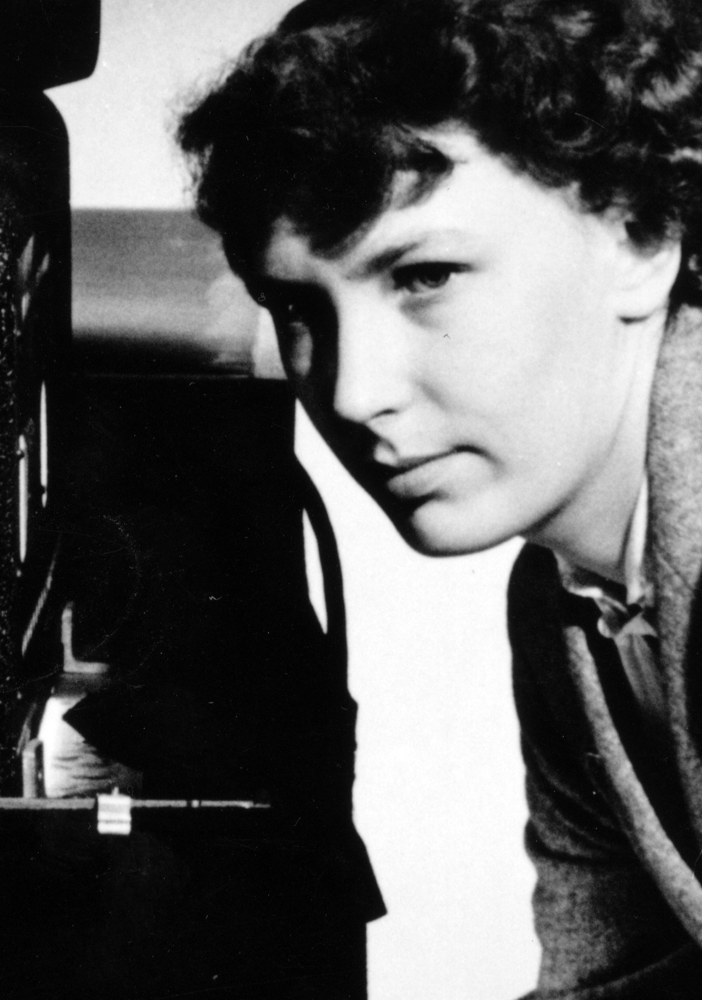

The typeface was designed in 1982 by Robin Nicholas and Patricia Saunders, for Monotype Corporation.Monotype was involved in the design and production of many typefaces in the 20th century.
A contemporary sans serif design, Arial contains more humanist characteristics than many of its predecessors and as such is more in tune with the mood of the last decades of the twentieth century. The overall treatment of curves is softer and fuller than in most industrial style sans serif faces. Terminal strokes are cut on the diagonal which helps to give the face a less mechanical appearance. Arial is an extremely versatile family of typefaces which can be used with equal success for text setting in reports, presentations, magazines etc, and for display use in newspapers, advertising and promotions.
Apart from the need to match the character widths and approximate/general appearance of Helvetica, the letter shapes of Arial are also strongly influenced by Monotype's own Monotype Grotesque designs—released in the 1920s or earlier Venus in the mid-1900s with additional influence from "New Grotesque"—an abortive redesign from 1956.The designs of the R, G and r also resemble Gill Sans. The changes cause the typeface to nearly match Linotype Helvetica in both proportion and weight (see figure), and perfectly match in width
Monotype executive Allan Haley observed, "Arial was drawn more rounded than Helvetica, the curves softer and fuller and the counters more open. The ends of the strokes on letters such as c, e, g and s, rather than being cut off on the horizontal, are terminated at the more natural angle in relation to the stroke direction."
